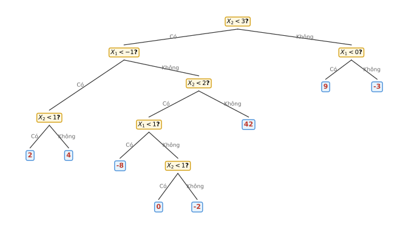

IAI · UET · VNU
Học máy
Mô hình cây quyết định
Bài 1 — Khả năng diễn giải (Interpretability)
Trong bài giảng, khái niệm tính diễn giải (interpretability) được dùng để mô tả một số họ mô hình.
- Bằng lời của bạn, hãy mô tả ý nghĩa của khái niệm tính diễn giải đối với một mô hình học máy.
- Bạn đồng ý hay không đồng ý với phát biểu sau: "Một mô hình diễn giải tốt luôn là lựa chọn tốt hơn so với một mô hình kém diễn giải hơn." Giải thích.
- Trong bài giảng, ta đã biết cây quyết định là một trong những mô hình có tính diễn giải cao. Giả sử bạn biết rằng mạng nơ-ron — vốn được coi là khó diễn giải — luôn có thể được biểu diễn bằng một cây quyết định. Điều này có khiến mạng nơ-ron trở nên dễ diễn giải không? Giải thích.
Bài 2 — Cây quyết định
-
Vẽ một cây hồi quy tương ứng với phân vùng không gian đặc trưng trong Hình 1. Các số trong mỗi vùng là giá trị trung bình của \(Y\) trên vùng đó.

Hình 1: Phân vùng không gian đặc trưng trên các biến \(X_1\) và \(X_2\). -
Xét cây quyết định trong Hình 2. Vẽ phân vùng không gian đặc trưng tương ứng với cây này.

Hình 2: Cây quyết định trên các biến \(X_1\) và \(X_2\). -
Xét bốn trường hợp (a-d) trong Hình 3. Mỗi trường hợp biểu diễn một biên quyết định giữa hai lớp (xanh lam và xanh lá). Với mỗi trường hợp, hãy cho biết biên này được mô hình hoá tốt hơn bằng một mô hình tuyến tính, bằng một cây phân lớp, hay không phương pháp nào trong hai. Giải thích lựa chọn của bạn.

Hình 3: Bốn biên quyết định giữa hai lớp (xanh lam và xanh lá).